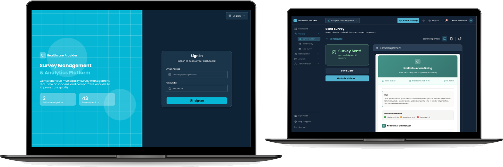
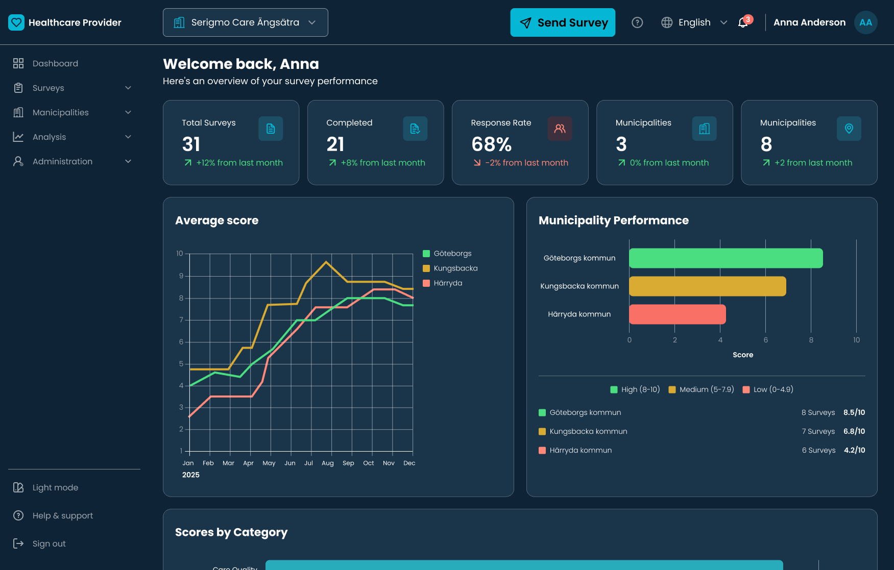
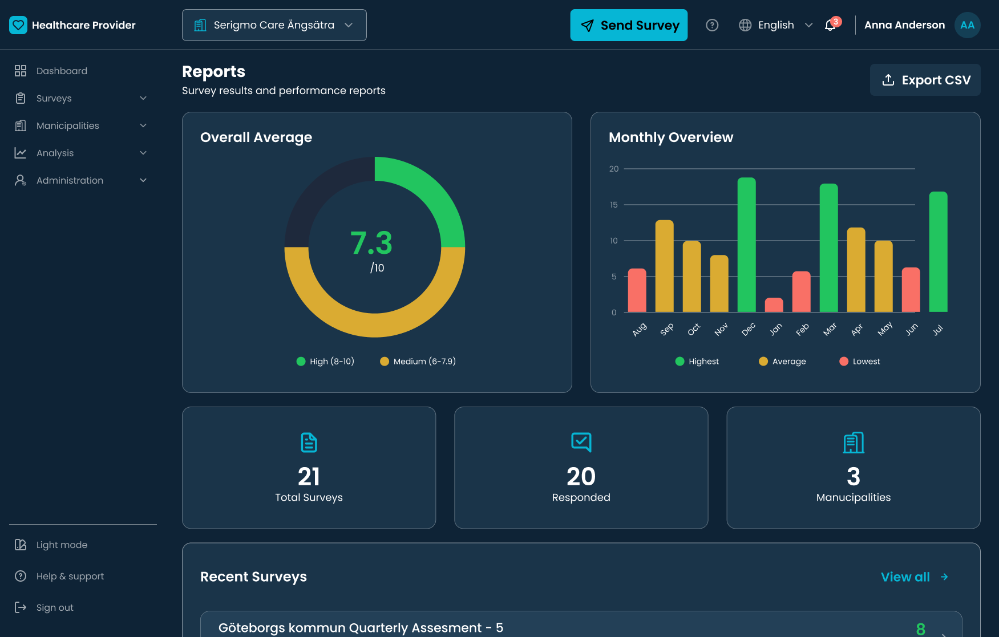

Healthcare Survey Platform · Overview

Replacing emails and spreadsheets with one platform for healthcare quality surveys
Healthcare Survey Platform · Overview
The problem: Administrators sent healthcare quality surveys to social workers across many municipalities, using Outlook, Excel and shared folders. Nobody could see who had answered, and reports took weeks.
What I did: Interviewed 4 quality managers, mapped the whole survey workflow, designed the platform and tested it with 5 administrators. I also built 100% of the front-end myself with Cursor.
Key decisions: A six-step wizard for sending surveys, a hierarchy that opens one level at a time, and traffic-light performance scoring.
Result: A production-ready, WCAG-compliant platform in under eight weeks. In testing, creating and sending a survey went from about 2 hours to about 15 minutes. The platform has launched with two customers and is used across 30+ Swedish municipalities.
In Sweden, healthcare quality surveys, for example for HVB and LSS services, go to social workers in districts across many municipalities. Administrators create them, send them, chase answers and report on the results, all in Outlook, Excel and shared folders.
Three tools that had never been introduced to each other.
Every survey round meant emails sent by hand, a separate spreadsheet per municipality, missed deadlines and no overview of who had answered. Quarterly reports meant copying data from many files, often for two full weeks.
The platform started as an idea from my manager at Focalpay and became its own B2B SaaS product: one place to create surveys, send them, track answers and analyse results. Our goal was to cut administrators' workload by an estimated 40%, without lowering data quality.
I led UX and UI end to end, from research to final screens, and built the whole front-end myself, since there was no front-end developer on the team. I worked closely with the PM, stakeholders and the back-end team, and designed to WCAG guidelines across mobile, tablet and desktop.
Hours and weeks from interviews with 4 quality managers.
"I spend more time chasing people for replies than actually analysing the quality of care."
— Healthcare Administrator, Stockholm
Four ways of understanding the problem
I wanted to understand how administrators actually work, not how the process looks on paper. Where does the time go, and why weren't the tools working?
"We need to see long-term trends across municipalities — not just individual survey answers."
Creating, sending, tracking and analysing surveys all happened in different tools, with nothing connecting them.
The spreadsheets were full of manual formatting and notes. People were using them for much more than they were made for.
Administrators jumped between Outlook, Excel and shared folders during a task. Sometimes they lost track and had to start their tracking again.
Anna Andersson · Primary persona
How a survey round feels, from start to report
The map follows a quality manager through ten steps. The high points are the guided steps with clear feedback. The low points are choosing recipients by hand and waiting for answers without knowing who has replied.
Making a complex structure simple to use
The platform had to handle four levels: providers, municipalities, districts and individual social workers, for people who were already busy. Mapping the workflow showed three big time sinks: setting up a send, tracking answers and quarterly reporting.
In a workshop, we grouped ideas into building the survey, sending it out, keeping track and reading the results, and prioritised them as Must, Should and Could. That became the platform's three main sections: Surveys, Analysis and Reports.

Workshop: grouping ideas and prioritising them as Must, Should and Could.
Showing one level at a time
Showing every administrative level at once created long, impenetrable lists. So the platform shows one level at a time.
| Level | Description | Design solution |
|---|---|---|
| Provider | Top-level healthcare organisation | Always visible in the sidebar, which can be collapsed |
| Municipality | Many per provider; used across 30+ | Opens with one tap to show its districts |
| District | Sub-units within each municipality | Opens inside the municipality, one level at a time |
| Social Worker | Individual survey respondents | Only shown when a district is selected |
Sending a survey in six steps
Sending a survey used to mean choosing recipients by hand, managing email lists and checking everything in separate documents. Missing just one municipality could ruin a whole reporting round. So I split sending into six steps, each checked before the next one opens.
Pick the template to send.
Find and select municipalities in the hierarchy.
Choose the language for each municipality or region.
Choose the answer deadline for each group.
Check all the details before sending.
Send to all chosen recipients at once.


Traffic-light colours instead of number tables
Managers needed to see quickly how each municipality was doing, and big number tables are tiring under time pressure. So I designed a three-colour scoring system that shows status at a glance.
| Status | Meaning | Action |
|---|---|---|
| Good performance | Above target on all key indicators. | No action needed. |
| Needs attention | Close to the limit, with a risk of falling below target. | Keep an eye on it and plan a follow-up. |
| Critical | Below the acceptable level. | Needs action now. |


5 administrators
I tested with 5 administrators who work with surveys regularly. Each created a survey and sent it to several municipalities, just like in their daily work.
The main issue: the Select All button had low contrast and sat in the wrong place, so most people selected districts one by one.
A button nobody can see is a very quiet button.
Average time to select all districts. Select All was small, had low contrast, and participants kept missing it.
About 3 minutes faster. I moved the button, made it stand out more and added a counter showing how many were selected. All 5 participants found it straight away.
"Now I can actually see what I've selected. Before I was never sure if I'd got everyone."
— Healthcare Administrator, Usability Testing SessionFrom design to working product
There was no front-end developer, so I built the whole front-end with Cursor while the back-end team built the server side. My design didn't stop in Figma: I set and checked every spacing value, colour, state and interaction in the product, using detailed prompts with exact tokens and accessibility requirements. When testing found the Select All problem, I fixed it in the code myself, without waiting for a handoff. The back-end team reviewed the front-end code, so it stayed consistent with their side of the product.
Measured, estimated, and what comes next
Our target was to cut administrators' workload by about 40%. Here's what we know so far, kept separate by how sure we are.
5 administrators did the same task the old way and then in the prototype:
Not yet measured:
Together, these point towards the 40% target, but a real reduction in workload can only be confirmed with usage over time. That's the next thing to measure as the customer base grows.

Before, administrators had a separate email thread for every municipality. Now they have one live view of who has answered in each municipality, and reports built from live data instead of copied by hand.
The platform has launched with two customers and is used across 30+ Swedish municipalities, and the team is working on reaching more. Next, we'll measure what testing couldn't: time per survey cycle, response rates and reporting time.
I didn't remove levels; I showed one at a time, so each step felt easy.
Administrators aren't afraid of technology. They're careful, because mistakes are serious. A wizard that checks each step gave them confidence nobody would be missed.
I could control every detail and still move faster. It's a skill I'm still developing.
Looking back
I'd agree with the first customers on how to measure workload before launch, by tracking time per survey cycle from day one. Without that baseline in real use, the 40% target can only be confirmed later.